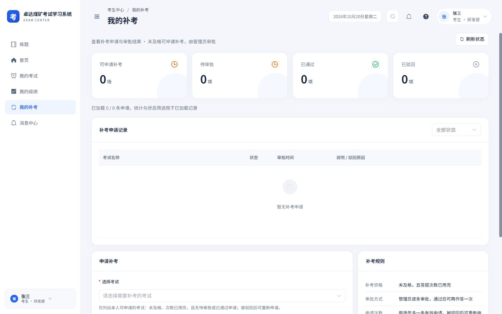
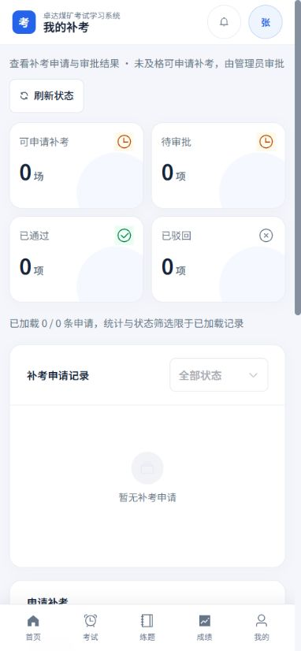
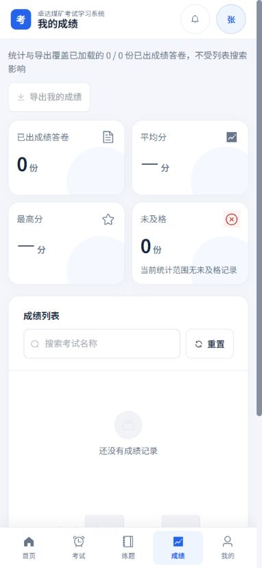
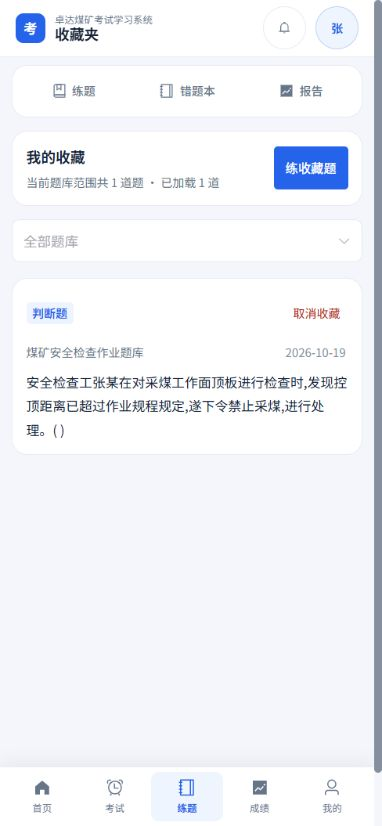
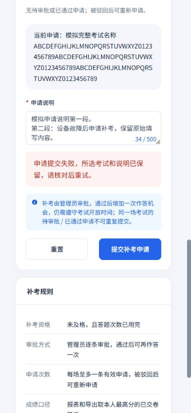
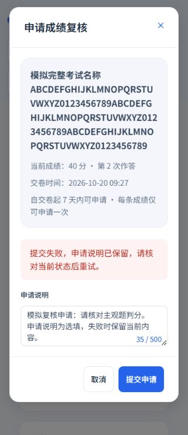
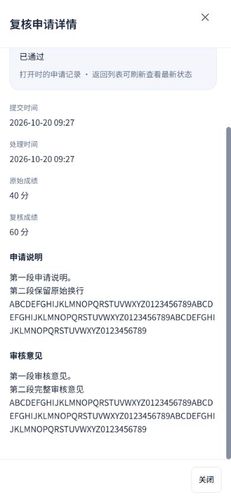

2026-10-20 · Workbuddy 01 · 本轮本地实施：我的补考、我的成绩、我的收藏
申请可恢复，完整记录可阅读
延续白侧栏、浅灰蓝底、蓝色操作及16 px卡片，完善考生申请和收藏工作流。保留本人数据范围、补考资格、复核开关与时限、说明选填规则、原题型、权限及练习入口。
本轮落地
- 补考选择支持搜索并完整显示当前考试；必填错误就地显示和聚焦。提交期间锁定考试、说明、重置与刷新，失败保留草稿。成功后资格或记录同步失败时，保留已提交事实，避免再次申请。
- 补考说明与服务端一致：被驳回后可重新申请，待审批或已通过不能重复申请；资格仍取本人接口。刷新同时读取资格与记录，未知不显示0。申请统计明确限已加载前100条；长说明保留换行，已通过的手机卡片提供“查看我的考试”。
- 成绩统计与导出继续显示已加载样本 / 总数，最多100份；未及格改用答卷单位“份”。CSV导出失败有恢复提示，考试资料失败保留成绩与可用标识，并提供单独重试。
- 复核规则或状态未知时，不假定可申请或已超期。申请弹窗完整显示考试、当前分数、作答次数、交卷时间与真实时限；说明保持选填。处理中禁止关闭与重复提交，失败保留说明。
- 复核记录可刷新，时间线入口打开完整本人申请详情；原申请、审核意见、提交及处理时间、原分与通过后的分数完整阅读。手机全屏、正文内部滚动，底栏关闭与时间线入口至少44 px。
- 收藏页首次加载数量未知；题库资料失败保留题库ID并提供独立重试。手机题库筛选改为可搜索选择器，避免长名称撑高标签；选中名称和题卡题库完整显示，题干保留段落。
- 取消收藏失败保留题目；取消成功但列表同步失败明确说明“无需重复取消”。筛选、加载更多与取消互相锁定，下一页失败保留已加载题目，筛选失败重试原目标题库。空筛选可返回全部，全部为空提供去练题入口。
实际应用
使用本地应用自带的演示考生账号进行只读验证，结束后恢复原管理员会话。未在真实环境提交补考或复核、取消收藏、开始考试或练习。截图时该考生无申请或已出分答卷，收藏接口返回1道题。








长内容和失败恢复
以下为实际页面组件和独立模拟接口，均不连接业务写接口。申请、取消失败及重复提交只在隔离样例和自动化测试中验证。







验证结果
320×740、390×844、844×390及1440×900，28组布局测量，覆盖三页实际页面、复核申请与详情、长考试名称、长题库、读取失败及空状态。未发现页面横向溢出，手机弹层底部操作、收藏筛选和取消入口44 px。
6个相关测试文件、112项测试通过，覆盖必填定位、提交锁定、成功后同步失败防重复、空复核说明、完整审核记录、原成绩明细权限与规则、收藏失败恢复、筛选目标重试、设计覆盖及样式规范。类型检查、生产构建和差异空白检查通过。
本报告记录本轮本地实现与验证范围；此前各端页面、功能和验收记录保留。